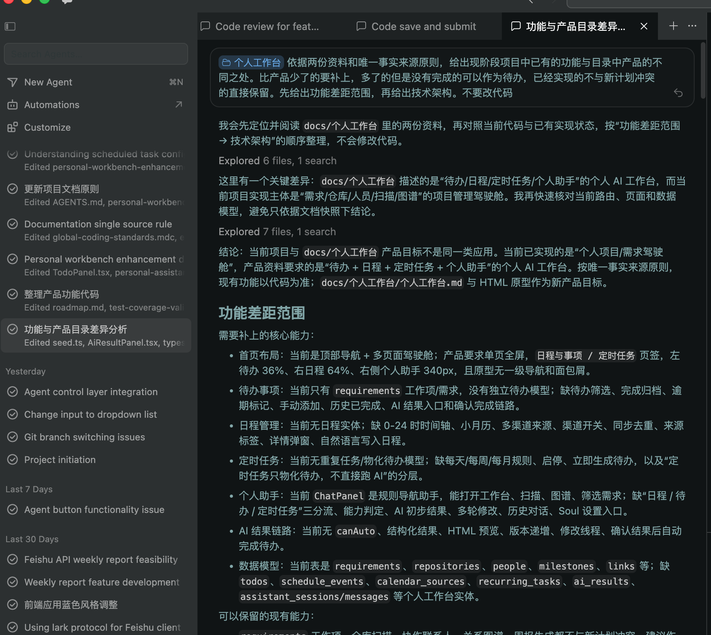
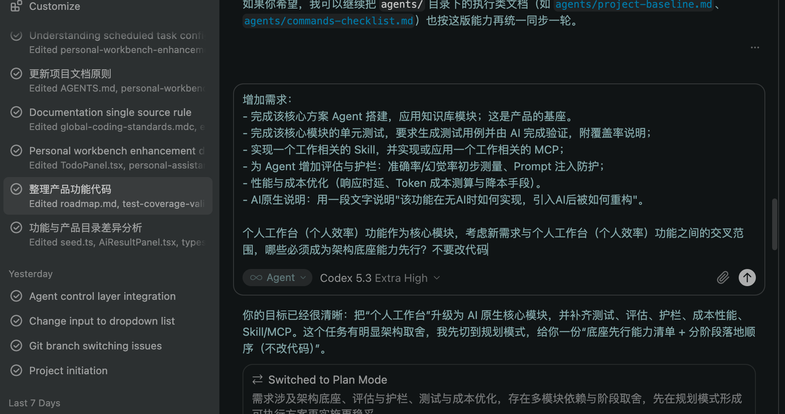
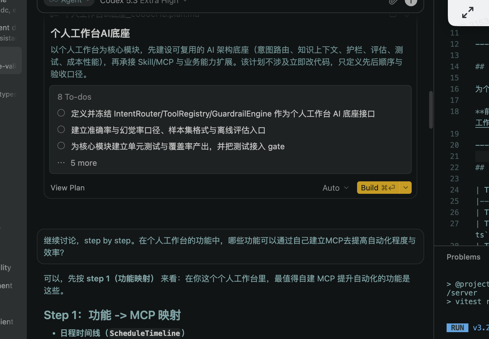
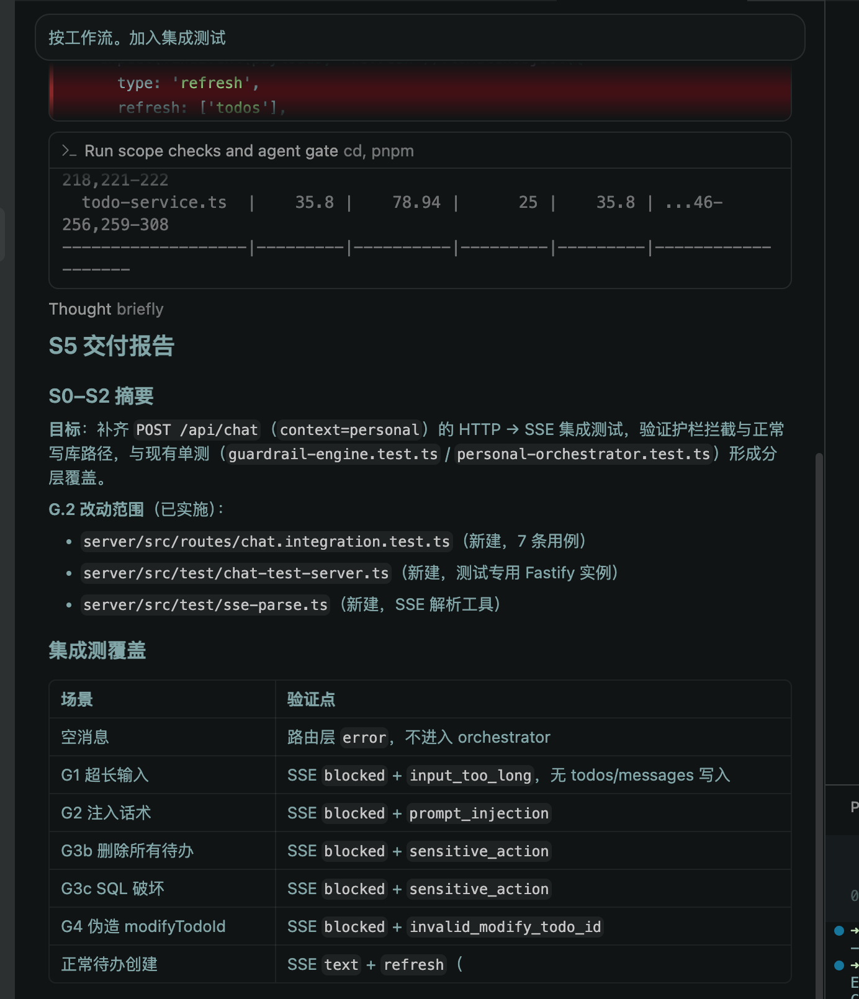

本文记录「个人 AI 助手工作台」从考题需求到可验收交付的人机协作全过程，总结哪些做法有效、哪些环节需要人工把关，供后续项目复用。
| 项 | 说明 |
|---|---|
| 协作工具 | Cursor Agent · Claude · 项目内 Agent 控制层（S0–S5） |
| 协作周期 | 2026-06 需求落地 → 2026-07-09 交付文档与 AI 原生说明收尾 |
| 复盘范围 | 工程实现、文档链、测试门禁、提示词与 Skill 使用 |
| 不在范围 | 终端用户如何使用产品内 AI 功能（见 AI原生·产品功能篇） |
个人工作台.md）人定 T0 边界
↓
AI 生成文档链（L4 → TL4 → 测试清单）
↓
AI 按 TL4 写代码 + 测例
↓
Agent 控制层：scope 校验 → agent:gate:dev → 完成判定
↓
人验收关键路径 + 交付文档
确定 pnpm monorepo 三件套、router→service→DB 分层、助手五层编排、SQLite 持久化策略；产出架构设计文档与 AGENTS.md 入口。
从产品需求反向生成 L4 功能点（9 个 L1 模块）与技术功能点对照表；建立编号可追溯的验收体系。
个人工作台 UI、待办/日程/定时 CRUD、个人助手 SSE 对话、AI 结果生成与修订、内部 RAG、四层护栏陆续落地。
补齐 97 条自动化用例（含 HTTP/SSE 集成 20 条）；pnpm agent:gate 全绿；行覆盖率 76.53%。
HTML 交付包、AI 原生说明（技术/产品双篇）、本协作复盘文档；截图与录屏归档。
| 资产 | 路径 | 作用 |
|---|---|---|
| Monorepo 入口 | AGENTS.md | 文档索引、跨包定位、数据流约定 |
| 工作流状态机 | agents/workflow.md | S0–S5 分阶段执行；G.2 范围确认不可豁免 |
| 工程硬约束 | agents/engineering-rules.md | 最小改动、包依赖方向、验证命令 |
| Cursor 规则 | .cursor/rules/*.mdc | 包边界、门禁策略、编码底线 |
| 门禁命令 | agents/commands-checklist.md | agent:scope:* · agent:gate:dev · agent:gate |
| Skill | 触发场景 | 协作价值 |
|---|---|---|
project-manager-architecture | 新增页面/API、排查包边界 | 统一 monorepo 分层与数据流，减少 AI 越界写入 |
start-project | 本地 dev 启动 | 标准化安装与验证步骤，避免环境类返工 |
todo-knowledge-rag | 待办 AI 生成/修订、RAG 检索 | 约束检索策略与降级路径，防止幻觉式上下文 |
workflow-driven-requirements | 用户要求走 S0–S5 | 强制暂停确认点，避免 AI 跳过范围确认 |
| 模式 | 示例 | 效果 |
|---|---|---|
| 引用权威文档 | 「按 个人工作台.md §五实现个人助手意图分流」 | 减少 AI 自行发明需求 |
| 指定编号追溯 | 「补齐 L1-05 的 05.22–05.28 黄金话术测试」 | 测试与验收一一对应 |
| 冻结边界 | 「定时任务 Tab 不调 LLM，只物化待办」 | 防止职责与成本失控 |
| 限定改动范围 | 「只改 server/src/assistant/，不动 client」 | 配合 G.2 scope 校验 |
| 验收命令 | 「改完后跑 pnpm agent:gate:dev，exit 0 才算完成」 | 客观完成判定 |
| 维度 | 成果 | 协作贡献 |
|---|---|---|
| 产品验收 | 9 个 L1 模块核心功能全部 ✅ | AI 生成 L4 清单 + 人审编号与状态 |
| 助手安全 | 四层护栏 + 20 条 HTTP/SSE 集成测 | 人定规则；AI 实现与补测 |
| AI 生成链路 | RAG + LLM + 规则模板降级 | Skill 约束检索边界；无 Key 仍可验收 |
| 工程门禁 | agent:gate PASS | Agent 控制层强制 scope + 测试 |
| 文档链 | 需求 → L4 → TL4 → 测试 → HTML 交付包 | AI 生成主体；人审定结构与索引 |
以下为实际协作中的提示词与 Skill 使用截图，展示「人给边界 → AI 按规范执行」的典型交互。




project-manager-architecture 后再改代码演示录屏：录屏2026-07-09 18.28.38.mp4（本地交付包内，展示端到端验收操作）。
| 实践 | 说明 | 可复制性 |
|---|---|---|
| T0 人定边界 | 三层能力分层、包依赖、五层助手在编码前冻结，后续 AI 补丁不破坏骨架 | 高 — 任何 AI 辅助项目应先写「不可动」清单 |
| 编号可追溯文档链 | L4 编号贯穿产品、技术、测试三层，改一处可定位全部关联 | 高 — 适合考题/外包验收场景 |
| 规则路径优先于 LLM | 分流、护栏、调度、降级均确定性实现；LLM 仅用于高价值 HTML 生成 | 中 — 需产品层明确「哪些不能交给模型」 |
| 门禁客观化完成 | agent:gate:dev exit 0 才能宣称完成，避免「看起来好了」 | 高 — 接入任意 monorepo CI 即可 |
| 无 Key 可验收 | 规则模板降级保证主链路在无 LLM 环境下仍可全量演示 | 中 — 依赖产品设计预留 P0 基线 |
| 问题 | 表现 | 应对 | 后续改进 |
|---|---|---|---|
| AI 越界写入 | 一次改动同时改 client + server | 启用 worktree scope 规则 + agent:scope:* | 大任务拆为多窗口并行 Agent |
| 文档与代码脱节 | 功能已实现但 L4 状态未同步 | 反向对照代码批量更新状态表 | 门禁增加「L4 状态漂移」检查（规划） |
| 日期/周期解析边界 | 「本周三」「每周五」偶发误解析 | 补单测 + 黄金话术回归 | NL 时间解析独立模块 + 更多话术 |
| LLM 依赖外部 API | CI 不能调真实模型 | mock HTTP + 规则模板 fallback 测例 | 契约测试与录制 fixture |
| 可选能力验收缺口 | 飞书 MCP 需运行时配置才验 | 代码落地 + 文档标注 ⚠️ | Testcontainers 或 mock MCP 服务 |
成功交付 ≈ 人定边界 × AI 吞吐 × 客观门禁 × 编号追溯 1. 人先写「不能错」：架构、安全、验收口径（T0） 2. AI 再写「可以批量」：CRUD、组件、测例、文档映射（T1–T3） 3. 门禁兜底「不能宣称完成」：scope + test + build（T4） 4. 人最后验「不能自动化」：UX 细节、黄金话术、降级体感（S5）
pnpm agent:scope:auto → pnpm agent:gate:dev| 方向 | 项 | 优先级 |
|---|---|---|
| 协作效率 | 机读任务 agents/agent-orchestration.tasks.yaml 与 L4 编号自动关联 | P1 |
| 测试 | 补齐 E2E 黄金路径 Playwright（已有部分 commit 基础） | P1 |
| 安全 | 护栏拦截记录落库复盘（见 TODO/guardrail-enhancement.md §6） | P2 |
| RAG | E4 本地 embedding 向量索引（当前 R0 规则检索已够用） | P3 可选 |
| 文档 | 交付 HTML 与 Markdown 主本自动同步检查 | P2 |
| 文档 | 说明 |
|---|---|
| AI原生-技术实现.html | T0–T4 工程侧五档工作流详解 |
| AI原生-产品功能.html | P0–P3 产品能力分档与重构说明 |
| 交付说明.html | 实现摘要与运行验收指引 |
| 架构设计文档.html | 系统架构与五层助手 |
| 测试报告.html | 97 条用例执行结果与覆盖率 |
| 演示产物文档.html | 截图与录屏索引 |
../个人工作台-功能点.md | L4 功能点与实现状态总览 |
../../../agents/workflow.md | Agent S0–S5 工作流定义 |